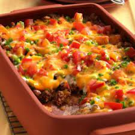

This casserole could get done in just about an hour, 15 mins of prep
time with 45 min of cooking time! You will need some biscuits, beef, taco
seasonin, vegetables, sour cream, and some cheese.
Ingredients
- biscuits
- Beef
- Taco Seasoning
- Vegetables
- Sour Cream
- Cheese
Steps
- Make the Crust: Press the biscuit dough in the bottom and up the sides
prepared baking dish. Bake in the preheated oven until lightly browned.
- Cook the meat: Cook the beef until crumbly. Drain the fat,
stir in seasoning and water, and bring to a boil. Reduce the heat and simmer.
Transfer the meat to a bowl.
- Cook the veggies: In the same pan, cook the sliced onions
and peppers until tender.
- Make the creamy layer: Combine the sour cream, mayo, 1/2 of
of the Cheddar, and 1/2 of the cooked veggies in a bowl.
- Layer and bake the casserole: Layer the meat, tomatoes, onion-
pepper mixture, jalapenos, and sour cream mixture on top of the biscuit dough.
Sprinkle it with cheese. Bake in the preheated oven until the cheese is browned and
bubbly.